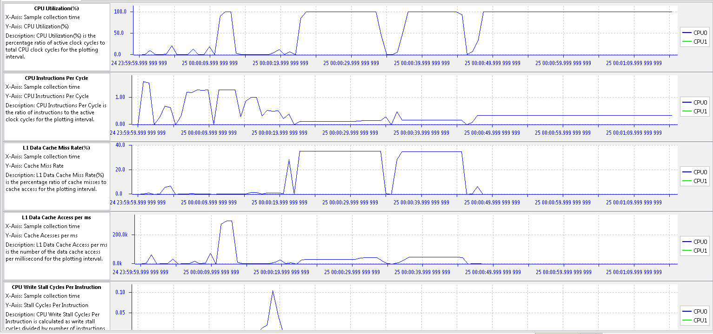
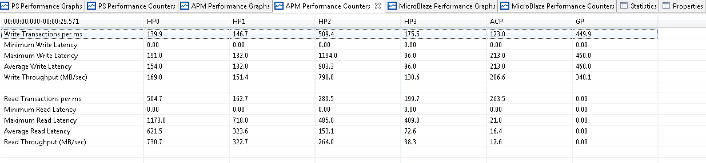
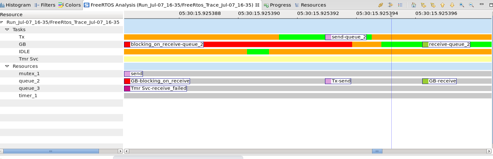

Analysis Views
For each of the different types of trace (PS, APM etc.,) collected there are set of views which help in analyzing it. There are two types of views, one is tabular view and other is graphical view.
User can view the analysis of trace data both in live mode i.e., when the data collection is running and in offline mode. In the live mode tabular view displays analysis for the entire trace duration whereas the graphical view displays analysis for the recent 20 seconds. In the offline mode graphical view displays the zoomed region whereas the tabular view displays the selection region or zoomed region depending on whichever is the last user action. In live mode to pause the views and view the past data use the icon present in the analysis views. Once the views are paused, the Histogram View can be used to zoom and analyze any portion of the data.
These analysis views display the data only corresponding trace file is opened in the Events Editor else they will be empty.
PS Performance Graphs
All the PS (ARM) metrics will be displayed using these graphs.

PS Performance Counters
Tabular representation of the PS (ARM) metrics.

APM Performance Graphs
APM metrics are displayed using the graphs.

APM Performance Counters
APM metrics displayed in tabular format.

FreeRTOS Analysis
FreeRTOS event trace displayed in different states.
